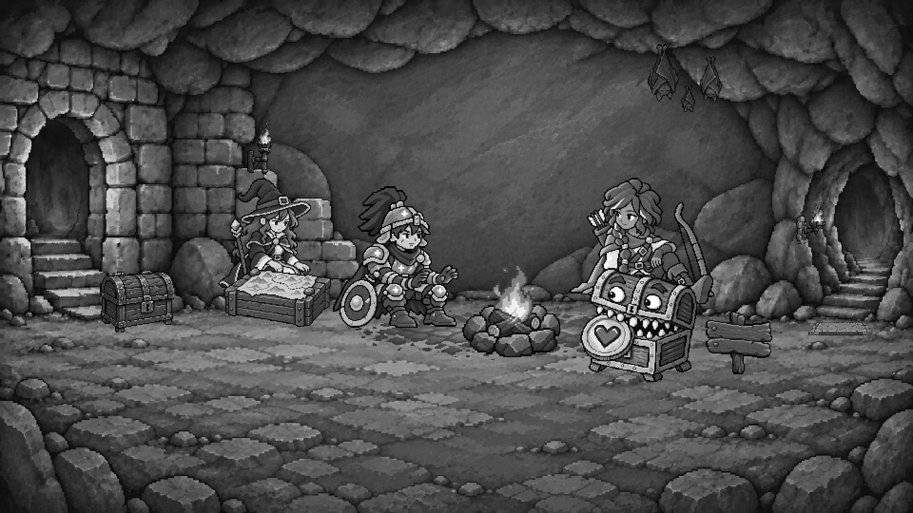
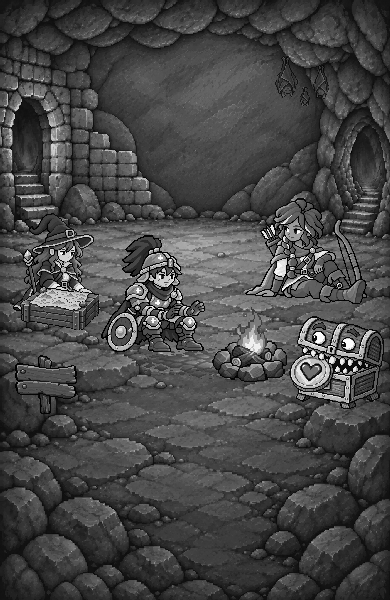
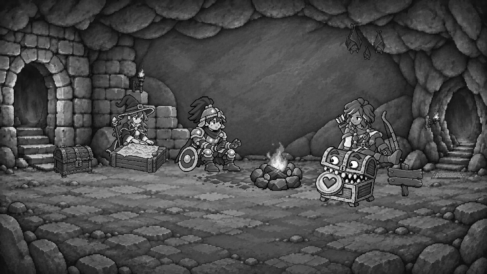
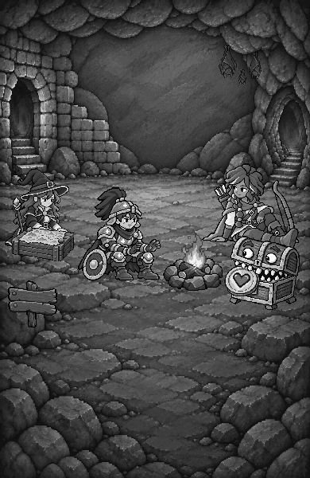

Landing 暖火休息處 — 構圖比較
awaiting-calibration · reviewOnly: true · runtimePromotion: false · 粗略構圖，尚未精修或核准
這次只比較小隊緊密程度、前後錯落與可加入的前側地面。角色身份、木箱尺寸、字標與 UI 相同。B 結合／第三 C 亮度字標方向已保留，尚待另輪整合；這不是字標選擇。
A — 緊密火邊
小隊較緊密，前側仍留一個可以加入的開口。
桌機原圖、桌機灰階、手機灰階


B — 錯落迎接
增加前後錯落，前側地面更寬，伙伴仍屬同一群組。
桌機原圖、桌機灰階、手機灰階


已核准身份與顆粒參照


本輪判斷
- 第一眼是有人陪伴的暖火，不是洞口、字標或單張角色。
- 地面連續，小隊共享鏡頭與火光；戰士暖手、法師看圖、遊俠朝內。
- 前側有實際可加入的地面，且不被對話框遮住。
- 人物、地圖、木牌與火圈清楚；沒有漂浮、相切或過粗像素。
- 手機與桌機都成立。灰階、hash 與測試不能替代你的視覺判斷。
本頁登入／CTA 只示範 live 入口及日誌閱讀，不連接認證或互動。既有三種帳務語意不變；沒有 Scenes approval 或 runtime promotion。
exact SHA-256
| architecture 1671 × 941 | 4cd9c5d047f1d0fb12b8d7b79e28a25d392a721c4e2d297e747c12d06cd32c1e |
| warrior 1254 × 1254 | f0fe868ad855ed16b3abc14e598eae9dea8d1b6828bc1c2b2457b0702cbbfd86 |
| mage 1254 × 1254 | edbeff6ce0f4a7a15bccf41682ff1e6cbc4304e10e5768eb6171399ee4ff7348 |
| ranger 1254 × 1254 | 675f68d0d7b5ee2ea94d8b10ccdcfe645b5e42c20769b9ffa095edc734163cdc |
| mimiku 1254 × 1254 | eb0d72bb4ce9a5079b6dfec51cf0f385423947caf82429c21e12e746b0b29458 |
| fire 1374 × 1145 | c520756878800221720d79b350adc148b04b7ea5b389cef765d13372a72377af |
| mapCrate 1536 × 1024 | d05d03c0dfeb2b449ef4e78140ff50a44a02cf9acefed9eb3b47a09f613cb993 |
| chest 1402 × 1122 | 8308b9bf28f164f3b6f37b190eb6330345d6787794f9e8e1b20af899c2f96011 |
| sign 1402 × 1122 | 5bcb3f0d1af78f7c8af429a77a856f6fe962b2e51fb25c5682277db72b91dbbe |
| torchHigh 1024 × 1536 | 3424163ebeb8708e0c91b55c882f05490e7411a84661a70fc87a9772209cd143 |
| torchLow 1199 × 1312 | fd1ed336c8c67d5a63c77569c274531e9fb717755db530cbcc501754fe3cf781 |
| bats 1536 × 1024 | bbaf9a47295b04310f5bd844d02d23056f37ef029aea932c284e6a891f3c4819 |
| carving 1774 × 887 | 14915907596610b4ad2d9a17c40b99f4d8d6addf356ff277ad2a5f3185ca9d33 |
| pressurePlate 1536 × 1024 | 1da221b2bf1f39eb21d4aded36781da50478a1478493e5b3275e9ca5f48a155b |
| architectureDesktop 1672 × 941 | a71491b85b4293c845bd09d0b97173ed90b35ef96a8fb54d277e673b27f2ae70 |
| architecturePhone 1011 × 1556 | 0d3ce1014c30d700d2a1d7315ba90ada44ffd9ac9019be0d91c2d7dc27d7d0f9 |
| groundLight 2172 × 724 | 126ff6aa09c7440ecd99d1fe3fa0e27c69f7bbd9cad042f45d1c2fb077f36c44 |
| A-desktop logical 960 × 540 | 50cc89fb799a6a88ec26913f6d540517938e3b022d96c103bc31dc2b0fb42427 |
| A-desktop color 1920 × 1080 | 0269193d70fc2c99d675d56201f7479779de3fef0dcc448e333673828e08c315 |
| A-desktop gray 1920 × 1080 | 1cca1e694218c3682fc8a99b3e4ffdd7290f0cf39b96862e69d210c39a5a3018 |
| A-phone logical 390 × 600 | 9f24f15217aaa2e80ea3d0d6e5e55b10ccebd205dd1c87a7cbd9afd2d0f03579 |
| A-phone color 390 × 600 | 9f24f15217aaa2e80ea3d0d6e5e55b10ccebd205dd1c87a7cbd9afd2d0f03579 |
| A-phone gray 390 × 600 | c14708f7db15bbb6bc7b3a81f59c8f54e74e2b15505735a72b49e2ace3a7d2d0 |
| B-desktop logical 960 × 540 | 419f6f89b12c1edf9c554fd0d969137132a8a5bbf0074a67657e3e068721d246 |
| B-desktop color 1920 × 1080 | 65198359390f2fdf924e5ce16ab4ffd8c0607f6793d90891c8835445fd485e2d |
| B-desktop gray 1920 × 1080 | b0f4e98e6674fb3165815014b3336c33bfcacc1b311db837eeeda55ea3cf1d66 |
| B-phone logical 390 × 600 | 2ab13d34513825627c27d919a51889ea4dd0c91c21ce8838f0ebea064c669bb3 |
| B-phone color 390 × 600 | 2ab13d34513825627c27d919a51889ea4dd0c91c21ce8838f0ebea064c669bb3 |
| B-phone gray 390 × 600 | 9f37aeab561ad12d568d77cf47234c82c8767bf498e32b56877eaad5e60f6910 |